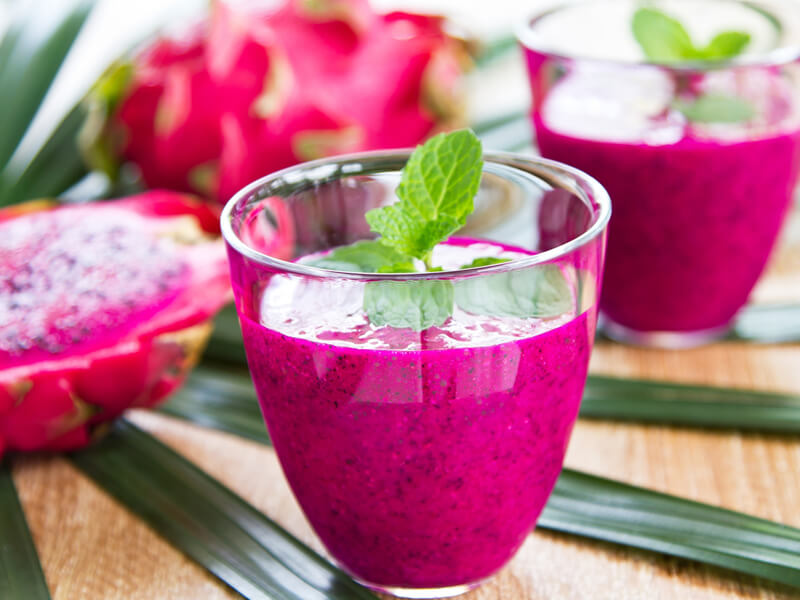

Ejder Meyveli Smoothie Tarifi

Bir kaktüs meyvesi çeşidi olan pitaya, C vitamini ve antioksidan bakımından zengindir.
Lifli bir yapıya sahip olan ejder meyvesi, diyet listelerine eklenen besinlerden biridir.
Kemikleri geliştiren, kalp ve damar hastalıkları riskini düşüren bu meyve, kilo verme sürecine de destek olur.
İşte, bu yüzden ejder meyvesini ahududu ve böğürtlen ile bir araya getirerek nefis bir içecek hazırladık.
Malzemeler hazırsa, ejder meyveli smoothie tarifine geçebiliriz.
Malzemeler
- 1 adet ejder meyvesi
- 1 fincan ahududu
- 1 fincan süt
- 1/2 fincan böğürtlen
- 1 çay kaşığı limon suyu
- 150 gr. çilekli yoğurt
- 2 yemek kaşığı chia tohumu
Nasil Yapilir?
- Öncelikle ejder meyvesini soyun ve güzelce temizleyin.
- Blenderin içerisine ejder meyvesi, böğürtlen, ahududu,
limon suyu, süt, çilekli yoğurt ve chia tohumunu alın.
- Karışım berrak bir kıvama gelinceye kadar çektirin.
- Hazırladığınız karışımı buzdolabında 1 saat dinlendirin.
- Ardından karışımı bardağa alın ve nane yapraklarıyla süsleyerek servis edin.
Afiyet olsun.